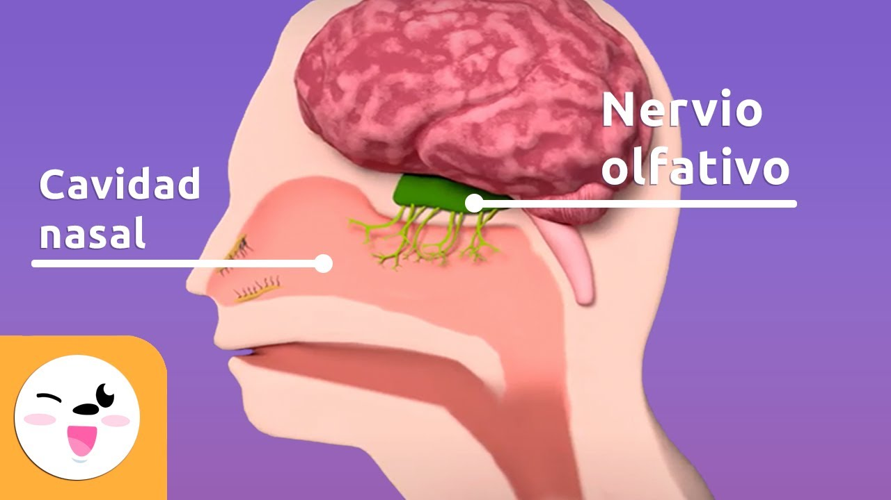

El olfato nos transporta a través de los aromas, evocando recuerdos y emociones con cada inhalación.
El olor a pan recién horneado, a flores frescas o a tierra mojada tras la lluvia puede despertar sensaciones únicas y reconfortantes.
Es un sentido poderoso, capaz de influir en nuestro estado de ánimo y nuestra percepción del entorno.
